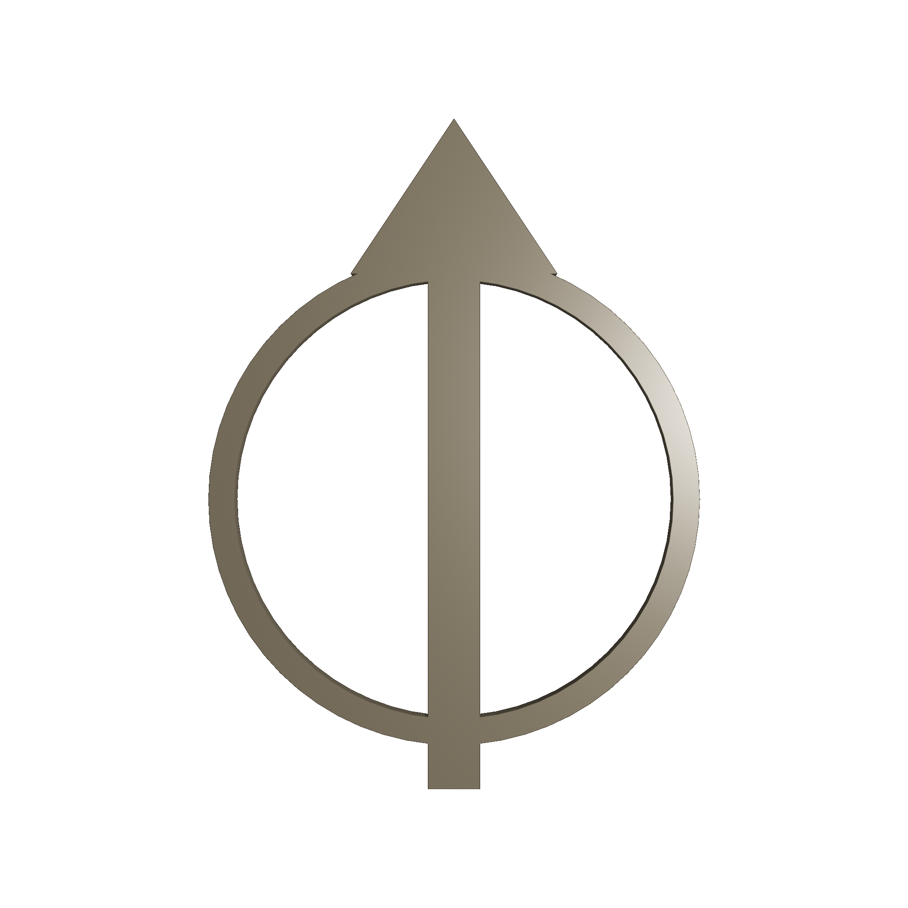

V3 HI1420 replacement · 4 November 2026. An interpretative land-and-seascape visualisation. Source data retain the licences and credits recorded below.
ANGLESEY ARCHIPELAGO — V3 HI1420 REPLACEMENT
Source credits and licence notices · 4 November 2026
A scientifically sourced, interpretative 3D geospatial visualisation.
Model preparation and presentation: Studio Oddscape, 2026.
WELSH TERRESTRIAL DATA
Welsh Government / Natural Resources Wales LiDAR, via DataMapWales.
Contains public sector information licensed under the Open Government Licence v3.0.
Source: https://datamap.gov.wales/maps/lidar-data-download/metadata_detail
Licence: https://www.nationalarchives.gov.uk/doc/open-government-licence/version/3/
The national 32-bit DTM was clipped to the Anglesey study area on 28 September 2026. The historical mosaic's complete tile chronology and explicit vertical realisation have not been established.
PUBLISHED EMODNET DATA PRODUCT
EMODnet Bathymetry Consortium (2024). EMODnet Digital Bathymetry (DTM 2024).
https://doi.org/10.12770/cf51df64-56f9-4a99-b1aa-36b8d7b743a1
Created by EMODnet; the data product belongs to the European Union and is made available under the Creative Commons Attribution 4.0 International licence (CC BY 4.0).
https://creativecommons.org/licenses/by/4.0/
Product information and source-reference services: https://emodnet.ec.europa.eu/en/bathymetry
This model reuses the published DTM, rather than distributing its original contributing surveys. Original survey access conditions remain distinct from the published product licence.
UKHO-DELIVERED HYDROGRAPHIC SURVEY DATA
Contains United Kingdom Hydrographic Office data © Crown copyright and database right.
The included surveys have source-specific Open Government Licence statements. OGL reference: https://www.nationalarchives.gov.uk/doc/open-government-licence/version/3/
Supplied UKHO Bathymetry Data Licence v1.0: https://seabed.admiralty.co.uk/assets/TERMS%20OF%20USE%20Seabed%20Mapping%20Data.pdf
Survey and originator/owner credits:
- 2013 HI1420 Off Skerries TSS Blocks D–E and A–C: Netsurvey; Maritime and Coastguard Agency (MCA); UKHO.
- 2021 HI1507 Skerries TSS to Liverpool Bay TSS, 36–100 m and 0–40 m: Clinton Marine Survey AB; MCA; UKHO.
- 2018 / 2019-211491 Menai Strait: Geological Survey of Ireland (GSI); UKHO.
- 2025 / 2025-534489 Holyhead Harbour MBES: Shoreline Surveys; Stena Line Ports Limited; UKHO.
- 2025 HI1908 Skerries SS Castilian wreck: Njord Survey AB; MCA; UKHO.
- 2015 HI1451 Caernarfon Bay Block 1: MMT Sweden AB; MCA; UKHO.
- 2019 HI1573 Point Lynas to Little Ormes Head: Clinton Marine Survey AB; MCA; UKHO.
- 2020 HI1571 Red Wharf Bay to Gwynt y Mor: Clinton Marine Survey AB; MCA; UKHO.
ODDSCAPE MODIFICATIONS
Sources were clipped, horizontally reprojected/resampled and combined by source priority into an 8 m working mosaic. The restricted direct Skerries contribution was replaced with HI1420 D–E. Regional mesh sampling is 224 m; textures and hillshade are derived visual treatments. Geometry was uniformly scaled and rebased for display and exported to GLB/USDZ. No artificial vertical exaggeration or common vertical-datum conversion was applied. These modifications do not add survey observations or establish native survey accuracy.
USE AND LIMITATIONS
This visualisation combines datasets acquired at different times, resolutions and vertical reference systems. A unified vertical datum has not been verified across all sources.
The model is intended for geographical interpretation, education and research communication. It is not suitable for navigation, engineering design or quantitative elevation analysis requiring a common vertical reference.
Vertical exaggeration: 1.0 (none).
Source data and derived interpretations are supplied without an accuracy warranty. Source-native anomalies and reference/coverage limitations remain. Consult the linked licences for their complete terms and warranty disclaimers.
No source provider endorses Studio Oddscape or this model. Attribution does not imply official status or navigational suitability. Underlying data retain their respective licences; Oddscape's presentation does not remove rights granted by those licences.
| Class | Dataset | Provider / owner | Survey or product dates | Licence evidence | Use |
|---|---|---|---|---|---|
| 1 | EMODnet mean elevation | EMODnet Bathymetry Consortium; product owned by the European Union; upstream data originators indexed in official source-reference layer. | 2024 product; inherited WCS clip | CC BY 4.0 — published DTM 2024 | CLEAR for defined derivative use; retain notices; not for navigation |
| 20 | Welsh terrestrial LiDAR mosaic | Welsh Government / Natural Resources Wales, DataMapWales national 32-bit DTM | Mixed acquisition dates; historical clip 28 September 2026 | OGL v3.0 | CLEAR for defined derivative use; retain notices; not for navigation |
| 101 | 2013 HI1420 Off Skerries TSS Blk D-E | United Kingdom Hydrographic Office / Netsurvey / Maritime and Coastguard Agency | 2013-08-24 – 2013-12-01 | OGL stated in dataset MEDIN; supplied UKHO bathymetry terms retained | CLEAR for defined derivative use; retain notices; not for navigation |
| 102 | 2021 HI1507 Skerries TSS to Liverpool Bay TSS 36-100m | United Kingdom Hydrographic Office / Clinton Marine Survey AB / Maritime and Coastguard Agency | 2021-06-30 – 2021-08-20 | OGL stated in dataset MEDIN; supplied UKHO bathymetry terms retained | CLEAR for defined derivative use; retain notices; not for navigation |
| 103 | 2021 HI1507 Skerries TSS to Liverpool Bay TSS 0-40m | United Kingdom Hydrographic Office / Clinton Marine Survey AB / Maritime and Coastguard Agency | 2021-06-30 – 2021-08-20 | OGL stated in dataset MEDIN; supplied UKHO bathymetry terms retained | CLEAR for defined derivative use; retain notices; not for navigation |
| 104 | 2018 2019-211491 Menai Strait | United Kingdom Hydrographic Office / Geological Survey of Ireland (GSI) | 2018-08-08 – 2018-08-22 | OGL stated in dataset MEDIN; supplied UKHO bathymetry terms retained | CLEAR for defined derivative use; retain notices; not for navigation |
| 105 | 2025 2025-534489 Holyhead Harbour MBES | United Kingdom Hydrographic Office / Shoreline Surveys / Stena Line Ports Limited | 2025-08-19 – 2025-08-23 | OGL stated in dataset MEDIN; supplied UKHO bathymetry terms retained | CLEAR for defined derivative use; retain notices; not for navigation |
| 106 | 2025 HI1908 Skerries SS Castilian | United Kingdom Hydrographic Office / Maritime and Coastguard Agency / Njord Survey AB | 2025-06-19 – 2025-06-19 | OGL stated in dataset MEDIN; supplied UKHO bathymetry terms retained | CLEAR for defined derivative use; retain notices; not for navigation |
| 121 | 2013 HI1420 Off Skerries TSS Blk A-C | United Kingdom Hydrographic Office / Netsurvey / Maritime and Coastguard Agency | 2013-08-24 – 2013-12-01 | OGL stated in dataset MEDIN; supplied UKHO bathymetry terms retained | CLEAR for defined derivative use; retain notices; not for navigation |
| 122 | 2015 HI1451 Caernarfon Bay Blk1 | United Kingdom Hydrographic Office / MMT Sweden AB / Maritime and Coastguard Agency | 2015-03-19 – 2015-08-24 | OGL stated in dataset MEDIN; supplied UKHO bathymetry terms retained | CLEAR for defined derivative use; retain notices; not for navigation |
| 123 | 2019 HI1573 Point Lynas | United Kingdom Hydrographic Office / Clinton Marine Survey AB / Maritime and Coastguard Agency | 2018-11-01 – 2019-05-15 | OGL stated in dataset MEDIN; supplied UKHO bathymetry terms retained | CLEAR for defined derivative use; retain notices; not for navigation |
| 124 | 2020 HI1571 Red Wharf | United Kingdom Hydrographic Office / Clinton Marine Survey AB / Maritime and Coastguard Agency | 2019-02-23 – 2020-02-06 | OGL stated in dataset MEDIN; supplied UKHO bathymetry terms retained | CLEAR for defined derivative use; retain notices; not for navigation |
OGL v3.0 full text · CC BY 4.0 legal code · Supplied UKHO Bathymetry Data Licence v1.0 · Portable credits and notices
Original restricted Skerries material and the former V3 models/images are not part of this review package. No claim is made that every upstream survey incorporated into the separately licensed EMODnet product was open or Osiris-free. No restricted original survey is distributed.
Marine ALAT/LAT/CD/VORF08 differences and the HI1451 BAG/sidecar discrepancy remain scientific limitations. This edition is not a verified common-datum elevation surface.
model-viewer 4.1.0, Apache 2.0; dependency notices retained in the unchanged vendored script. Viewer licence.